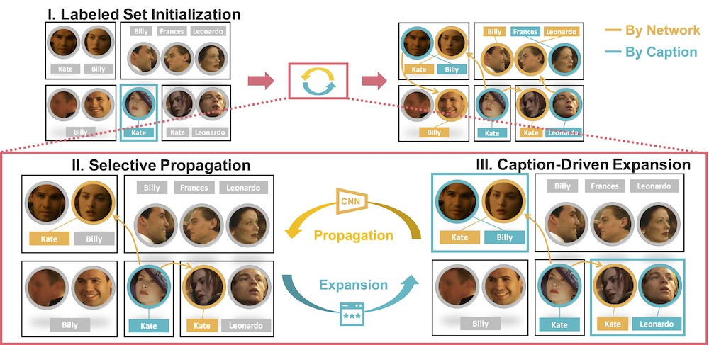
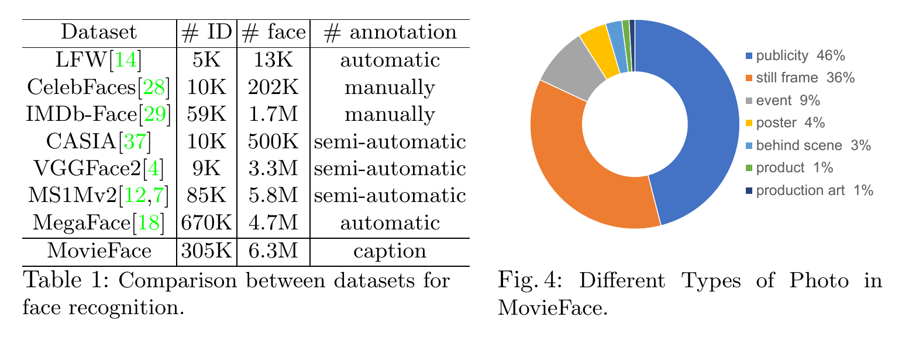
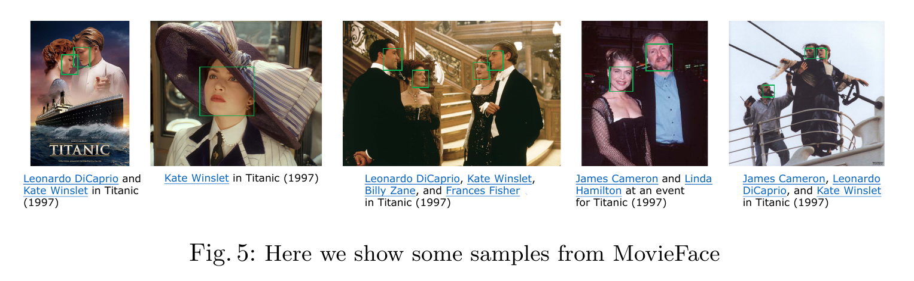

Overview
The advances over the past several years have pushed the performance of face recognition
to an amazing level. This great success, to a large extent, is built on top of millions
of annotated samples. However, as we endeavor to take the performance to
the next level, the reliance on annotated data becomes a major obstacle.
We desire to explore an alternative approach, namely using captioned images
for training, as an attempt to mitigate this difficulty.
Captioned images are widely available on the web, while the captions often
contain the names of the subjects in the images.
Hence, an effective method to leverage such data would significantly reduce the
need of human annotations.
However, an important challenge along this way needs to be tackled:
the names in the captions are often noisy and ambiguous,
especially when there are multiple names in the captions
or multiple people in the photos.
In this work, we propose a simple yet effective method, which trains
a face recognition model by progressively expanding the labeled set
via both selective propagation and caption-driven expansion.
We build a large-scale dataset of captioned images,
which contain 6.3M faces from 305K subjects.
Our experiments show that using the proposed method, we can
train a state-of-the-art face recognition model
without manual annotation (99.65% in LFW).
This shows the great potential of caption-supervised face recognition.
Dataset
Statistics

Sample

Citation
@inproceedings{huang2020caption,
title={Caption-Supervised Face Recognition: Training a State-of-the-Art Face Model without Manual Annotation},
author={Huang, Qingqiu and Yang, Lei and Huang, Huaiyi and Wu, Tong and Lin, Dahua},
booktitle = {The European Conference on Computer Vision (ECCV)},
year={2020}
}